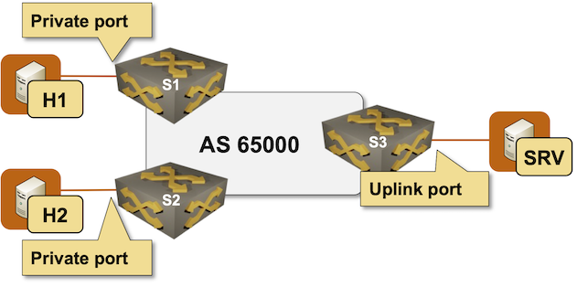

Building a Private VLAN with EVPN/VXLAN
A Private VLAN (PVLAN) is (according to Wikipedia) a VLAN in which devices connected to a private port can communicate with devices connected to uplink ports but not with those connected to other private ports.
For example, in the lab topology we’ll be using, H1 and H2 can communicate with SRV but not with each other.

In this lab exercise, you’ll implement the private VLAN using the concepts you mastered in the Build an EVPN-based MAC-VRF instance exercise, but using slightly different route targets.
Device Requirements
You can use any device supported by the netlab OSPF, BGP, and VLAN configuration modules. The device should support VXLAN and EVPN.
The Linux hosts attached to the lab switches are implemented with containers; your netlab installation will thus have to include Docker and containerlab1.
Start the Lab
Assuming you already set up your lab infrastructure:
- Change directory to
services/1-pvlan - Execute netlab up
- Log into lab devices with netlab connect and verify that the IP addresses and the OSPF/BGP routing are properly configured.
The default lab topology (topology.yml) configures a simple EVPN MAC-VRF. Start a simplified lab with netlab up minimal.yml if netlab cannot configure VXLAN or EVPN on the device you want to use (you’ll have to configure VXLAN and EVPN yourself).
Existing Device Configuration
- The switches in your lab (S1, S2, and S3) are preconfigured with red VLAN using VLAN tag 100 and VXLAN VNI 1000.
- IPv4 addresses are configured on Linux hosts, switch loopback interfaces, and the interswitch link (details).
- The switches run OSPF in area 0 across the interswitch link (details).
- The switches have IBGP sessions between their loopback interfaces (details). These sessions are configured to exchange IPv4 and EVPN prefixes.
- A MAC-VRF is configured for the red VLAN using import- and export route target
65000:100
Warning
Your lab won’t have the EVPN address family on IBGP sessions, VXLAN configuration, or MAC-VRF configuration if you started it with the minimal.yml topology.
Configuration Tasks
Change the route targets used in the red MAC-VRF as follows:
- The MAC-VRFs with private ports should have export route target 65000:200 (private MACs) and import route target 65000:201 (uplink MACs).
- The MAC-VRFs with uplink ports should have export route target 65000:201 (uplink MACs) and two import route targets: 65000:201 (uplink MACs) and 65000:200 (private MACs).
Warning
Some devices (for example, Arista cEOS) do not support multiple import/export route targets per MAC-VRF. In that case, configure just the private MACs route target as the import route target in the uplink MAC-VRF; devices connected to the uplink ports will be able to reach the devices connected to the private ports, but not those connected to other uplink ports.
The required route targets are summarized in the following table:
| switch | export RT | import RT |
|---|---|---|
| S1 | 65000:200 | 65000:201 |
| S2 | 65000:200 | 65000:201 |
| S3 | 65000:201 | 65000:200 65000:201 |
Tip
If you’re familiar with MPLS/VPN designs, you might recognize the RT pattern used in hub-and-spoke VPNs. That’s exactly what Private VLANs are.
Verification
- H1 and H2 should be able to ping SRV
- H1 should not be able to ping H2 (or vice versa)
Troubleshooting
Start with the troubleshooting hints from the Build an EVPN-based MAC-VRF instance lab exercise, then focus on the PVLAN-specific EVPN routes:
- Inspect the EVPN IMET (type-3) routes. Each switch should have three IMET routes (one per switch). Two of those routes (S1/S2) should have route target 65000:200, the third one (S3) should have route target 65000:201. All three routes should have the same VXLAN VNI.
EVPN IMET routes on S1 running Arista EOS
s1#show bgp evpn route-type imet detail
BGP routing table information for VRF default
Router identifier 10.0.0.1, local AS number 65000
BGP routing table entry for imet 10.0.0.1, Route Distinguisher: 10.0.0.1:100
Paths: 1 available
Local
- from - (0.0.0.0)
Origin IGP, metric -, localpref -, weight 0, tag 0, valid, local, best
Extended Community: Route-Target-AS:65000:200 TunnelEncap:tunnelTypeVxlan
VNI: 1000
PMSI Tunnel: Ingress Replication, MPLS Label: 1000, Leaf Information Required: false, Tunnel ID: 10.0.0.1
BGP routing table entry for imet 10.0.0.2, Route Distinguisher: 10.0.0.2:100
Paths: 1 available
Local
10.0.0.2 from 10.0.0.2 (10.0.0.2)
Origin IGP, metric -, localpref 100, weight 0, tag 0, valid, internal, best
Extended Community: Route-Target-AS:65000:200 TunnelEncap:tunnelTypeVxlan
VNI: 1000
PMSI Tunnel: Ingress Replication, MPLS Label: 1000, Leaf Information Required: false, Tunnel ID: 10.0.0.2
BGP routing table entry for imet 10.0.0.3, Route Distinguisher: 10.0.0.3:100
Paths: 1 available
Local
10.0.0.3 from 10.0.0.3 (10.0.0.3)
Origin IGP, metric -, localpref 100, weight 0, tag 0, valid, internal, best
Extended Community: Route-Target-AS:65000:201 TunnelEncap:tunnelTypeVxlan
VNI: 1000
PMSI Tunnel: Ingress Replication, MPLS Label: 1000, Leaf Information Required: false, Tunnel ID: 10.0.0.3
- The route targets in the IMET routes are used to build VXLAN ingress replication lists. S1 and S2 should have just S3 as the remote VTEP; S3 should have both S1 and S2 as remote VTEPs:
Remote VTEPs on S1 running Arista EOS
s1#show vxlan vtep
Remote VTEPS for Vxlan1:
VTEP Tunnel Type(s)
-------------- --------------
10.0.0.3 flood
Total number of remote VTEPS: 1
Remote VTEPs on S3 running Arista EOS
s3#show vxlan vtep
Remote VTEPS for Vxlan1:
VTEP Tunnel Type(s)
-------------- --------------
10.0.0.1 flood
10.0.0.2 flood
Total number of remote VTEPS: 2
Since you started with a working MAC-VRF instance, the verification steps should pass once you see the expected remote VTEPs (indicating that the route targets are configured correctly). Nonetheless, you might want to inspect the MAC/IP (type-2) EVPN routes and compare them to the MAC address table.
For example, S1 has three MAC/IP EVPN routes in its BGP table but only two addresses in the MAC address table for the red VLAN due to a route target mismatch on the EVPN route advertised by S2:
EVPN MAC-IP routes on S1 running Arista EOS
s1#show bgp evpn route-type mac-ip
BGP routing table information for VRF default
Router identifier 10.0.0.1, local AS number 65000
Route status codes: * - valid, > - active, S - Stale, E - ECMP head, e - ECMP
c - Contributing to ECMP, % - Pending best path selection
Origin codes: i - IGP, e - EGP, ? - incomplete
AS Path Attributes: Or-ID - Originator ID, C-LST - Cluster List, LL Nexthop - Link Local Nexthop
Network Next Hop Metric LocPref Weight Path
* > RD: 10.0.0.1:100 mac-ip aac1.aba9.cac6
- - - 0 i
* > RD: 10.0.0.3:100 mac-ip aac1.abcf.1fb1
10.0.0.3 - 100 0 i
* > RD: 10.0.0.2:100 mac-ip aac1.abf8.d7c2
10.0.0.2 - 100 0 i
MAC address table for the red VLAN on S1 running Arista EOS
s1#show mac address-table vlan 100
Mac Address Table
------------------------------------------------------------------
Vlan Mac Address Type Ports Moves Last Move
---- ----------- ---- ----- ----- ---------
100 aac1.aba9.cac6 DYNAMIC Et3 1 0:01:13 ago
100 aac1.abcf.1fb1 DYNAMIC Vx1 1 0:01:13 ago
Total Mac Addresses for this criterion: 2
Multicast Mac Address Table
------------------------------------------------------------------
Vlan Mac Address Type Ports
---- ----------- ---- -----
Total Mac Addresses for this criterion: 0
Cheating
- Shut down your lab with the netlab down command
- Start the lab from the
solution.ymltopology with the netlab up solution.yml command - Explore the device configurations
Reference Information
Lab Wiring
| Origin Device | Origin Port | Destination Device | Destination Port |
|---|---|---|---|
| s1 | Ethernet1 | s2 | Ethernet1 |
| s2 | Ethernet2 | s3 | Ethernet1 |
| s3 | Ethernet2 | s1 | Ethernet2 |
| s1 | Ethernet3 | h1 | eth1 |
| s2 | Ethernet3 | h2 | eth1 |
| s3 | Ethernet3 | srv | eth1 |
Lab Addressing
| Node/Interface | IPv4 Address | IPv6 Address | Description |
|---|---|---|---|
| s1 | 10.0.0.1/32 | Loopback | |
| Ethernet1 | 10.1.0.1/30 | s1 -> s2 | |
| Ethernet2 | 10.1.0.9/30 | s1 -> s3 | |
| s2 | 10.0.0.2/32 | Loopback | |
| Ethernet1 | 10.1.0.2/30 | s2 -> s1 | |
| Ethernet2 | 10.1.0.5/30 | s2 -> s3 | |
| s3 | 10.0.0.3/32 | Loopback | |
| Ethernet1 | 10.1.0.6/30 | s3 -> s2 | |
| Ethernet2 | 10.1.0.10/30 | s3 -> s1 | |
| h1 | |||
| eth1 | 172.16.0.4/24 | h1 -> [s1,h2,s2,srv,s3] | |
| h2 | |||
| eth1 | 172.16.0.5/24 | h2 -> [h1,s1,s2,srv,s3] | |
| srv | |||
| eth1 | 172.16.0.6/24 | srv -> [h1,s1,h2,s2,s3] |
OSPF Routing (Area 0)
| Router | Interface | IPv4 Address | Neighbor(s) |
|---|---|---|---|
| s1 | Loopback | 10.0.0.1/32 | |
| Ethernet1 | 10.1.0.1/30 | s2 | |
| Ethernet2 | 10.1.0.9/30 | s3 | |
| s2 | Loopback | 10.0.0.2/32 | |
| Ethernet1 | 10.1.0.2/30 | s1 | |
| Ethernet2 | 10.1.0.5/30 | s3 | |
| s3 | Loopback | 10.0.0.3/32 | |
| Ethernet1 | 10.1.0.6/30 | s2 | |
| Ethernet2 | 10.1.0.10/30 | s1 |
IBGP Sessions
| Node | Router ID/ Neighbor |
Router AS/ Neighbor AS |
Neighbor IPv4 |
|---|---|---|---|
| s1 | 10.0.0.1 | 65000 | |
| s2 | 65000 | 10.0.0.2 | |
| s3 | 65000 | 10.0.0.3 | |
| s2 | 10.0.0.2 | 65000 | |
| s1 | 65000 | 10.0.0.1 | |
| s3 | 65000 | 10.0.0.3 | |
| s3 | 10.0.0.3 | 65000 | |
| s1 | 65000 | 10.0.0.1 | |
| s2 | 65000 | 10.0.0.2 |
-
Use the netlab install containerlab command on Ubuntu/Debian to install them. ↩